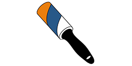

BLint Official Documentation
Overview
In programming IDEs like Visual Studio Code or PyCharm, a linter is used to analyze code to highlight bad practices, naming conventions, or potentially bad code.
BLint allows users to run a series of checks on the Blender project for the purpose of standardization and improving project file conventions. Automated checks provided by BLint can speed up workflow and automate continuous integration and quality checks before hitting ‘Render’ or sending off to a render farm. Quality checks may include but are not limited to:
Naming conventions
checking render settings that may affect performance or expected results
ensuring textures are all packed or located in a specific folder
In some cases, an issue can be easily fixed. Each BLint rule has the option of implementing an automatic fix. External configurations can be used as well as rules that come built-in.
This addon supports Blender 3.0 and above (it may be compatible on older versions but not guaranteed).